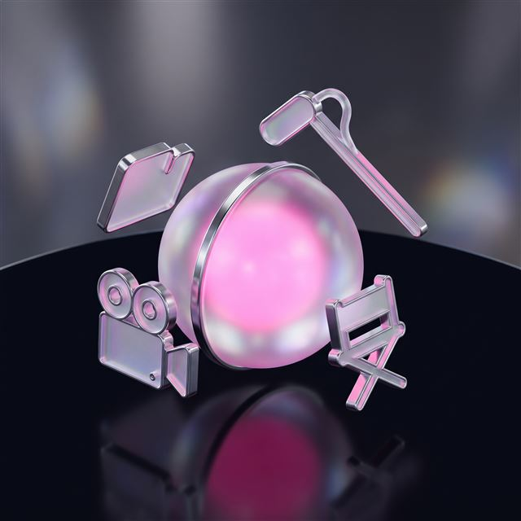
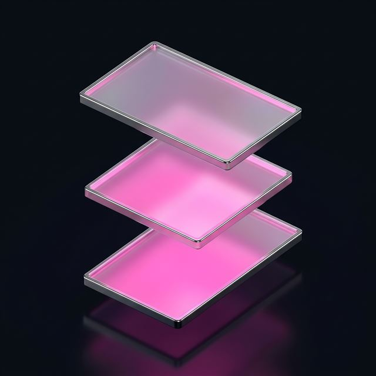

Video Production Agency: From Commercial Films to AI-Assisted Video
COMMERCIAL FILM · PRODUCT VIDEO · SOCIAL VIDEO & REELS · AI PRODUCTION
TasarımMania is a video production agency that brings your brand's story to the screen, running the whole process under one roof — from script to edit, from voice-over to colour grading. Whether it's a commercial film, a product video, social media content or AI-assisted production, every project is planned around your brand's goal and completed as a one-off delivery.
↑ PRESS THE FIRST FRAME — ITS COUNTERPART LIGHTS UP IN THE EDIT
- scene_approved
- shoot_complete
- export
Three formats from one shoot: advert, Reels, product page.
Script, shoot and edit flow through one team; the format isn't improvised afterwards.
typical delivery time
project-based work
in web and software
the usage rights
What this service covers: commercial films, product video, social video and AI production
Video needs differ from brand to brand; sometimes a cinematic commercial film is called for, sometimes a quickly shot product video is enough. The four headings below separate the most requested services by scope, process and output.
Commercial Film Production
From script to shoot, from edit to voice-over, we produce a cinematic commercial film that carries your brand's message.
- Script and storyboard preparation
- Shooting with a professional crew and kit
- Editing, colour grading and sound design
- Voice-over and music integration
Product Video
Short videos that present the product clearly and attractively, for an e-commerce page or a product launch.
- A product-focused shooting plan
- Studio or location shooting options
- Formats suited to e-commerce platforms
- A short, effective edit
Social Video and Reels
Vertical social video content for channels like Instagram and TikTok, built to catch attention in the first second.
- Vertical format production
- On-trend editing and subtitles
- Versions made for Instagram and TikTok
- A workflow built around fast delivery
AI-Assisted Production
Video content produced with AI tools and no camera shoot; a fast and economical alternative.
- Image and video generation with AI
- Script and voice-over integration
- Production without camera or location costs
- Fast revisions and variants
Let's work out which kind of video suits you, togetherFive steps, two minutes. The scope and price range appear on screen.
Video production costs in 2026: what sets the band
This is a one-off project delivery (not a monthly package); typical delivery takes 3–6 weeks. The final figure is settled by the complexity of the script, the number of shooting days and the editing load, and it's stated in the quote once the scope is mapped. Five things set the band:
- The scope of the script and the production plan
- The number of shooting days and the size of the crew
- Editing time and how much effects and colour work is involved
- The voice-over, music and sound design requirement
- The number of videos requested and how many versions
Not every brand needs a big production — we've explained why below. We start the conversation by mapping the scope. The channel limits for anything going on air are set out in RTÜK's broadcasting principles .
What's included, what isn't?
Included in the price
- Script and shooting plan preparation
- A professional crew and basic kit
- Editing, colour grading and sound mixing
- Voice-over coordination within the agreed scope
- Versioning for the delivery formats
- A limited number of revision rounds
- Progress tracking with a project manager
Separate line item
- The media budget for the advertising channel
- Fees for actors, models or voice artists
- Location hire and filming permits
- Licensed stock music or a bespoke composition
- Additional revision rounds and requests outside the scope
See your project's band on screenOnly your name and phone number are required.
Not Every Brand Needs a Big Production
The question to ask first is this: does your product call for a cinematic commercial film, or is a fast, clear piece of storytelling enough? Where the budget is tight, AI-assisted production or an edit built on a simple shoot often gives the better result; we propose a scope built around what your brand actually needs, rather than imposing the same scale on every job.
Frequently asked questions: video production costs, process and usage rights
The questions that come up most, with short answers.
How are video production prices set?
The price is shaped by the scope of the script, the number of shooting days, the editing load and whether voice-over is needed.
The final figure is settled through the factors in the pricing section , taking crew size and editing intensity into account too.
What stages does the video production service have, and how long does it take?
It has four stages: script, shoot, edit and delivery.
Depending on the scope and the number of revisions, the total is completed within the delivery window given in the pricing section.
What's the difference between a corporate film and a commercial film?
A corporate film tells the story of the brand and the organization; a commercial film puts a particular product forward.
The shooting process is similar, but the message is structured differently: a corporate film focuses on identity, a commercial film on the campaign.
Does AI-assisted production replace a conventional shoot, and what's the quality like?
It doesn't replace every project, but on the right kind of content it delivers a fast result close to a conventional shoot.
Where real performance from an actor or the feel of a particular location is needed, a conventional shoot remains more reliable.
Are voice-over and music for a commercial film included in the price?
Standard voice-over coordination is included; a bespoke composition or licensed music is charged separately.
The basic sound design within the agreed scope is included in the price; licensed commercial music is charged separately when it's wanted.
Is a video production studio essential, or can you shoot on location?
No, a studio isn't essential; we can shoot at your premises or at a chosen location.
A studio is often preferred for product videos, while corporate and social content can be shot on location once the choice is settled.
Who holds the source files and usage rights for the delivered video?
The final video and its usage rights belong to the client; the raw source files are covered separately in the contract.
If a transfer of the raw footage is requested, it's set out as a separate clause at the contract stage.
Can a video made for Instagram Reels be used on other channels?
Yes, the vertical format works on most channels; versioning for different platforms is recommended.
It works well on TikTok and YouTube Shorts; horizontal channels may need the format re-edited.
Other modules
Web Design & Software The ground the other four modules stand on. Mobile Apps iOS and Android; a shared API and design system with the web. Meta & Google Ads The accounts are in your name; we build the pages the ads land on. SEO Services Technical SEO, content and local visibility.If you'd like to look before deciding
The process, the crew, delivery formats and usage rights — all here. Open it, read it, close it.
How Does the Process Work?
The process starts with a needs analysis and sign-off on the script; after the shooting schedule, the edit, colour grading and sound design are completed and delivery is made in the agreed formats.
Crew and Kit

Depending on the scope, a crew of director, camera operator, editor and sound designer is assigned; on AI-assisted projects the crew is smaller and more technical.
Delivery Formats

Videos are delivered horizontal, vertical or square depending on the channel, at a suitable resolution and compression; subtitled versions are prepared on request.
Revision Policy
Every project includes a limited number of revision rounds, and that number is settled at the quote stage; revisions that require a change of script count as a separate scope.
Usage Rights and Continuity
The final video delivered can be used indefinitely on the channels agreed; when an update is wanted for a new campaign, a separate project scope is drawn up.
Commercial Film · Product Video · Reels
Let's Talk About Your Project
From a commercial film to AI-assisted production, let's settle together which kind of video suits your brand.